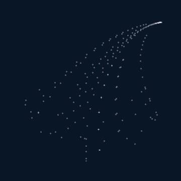

F₁ · Stem
1%x' = 0
y' = 0.16y
Barnsley's fern is an example of an Iterated function system, generated by repeatedly choosing one of four affine transformations and plotting the resulting point. A simple local rule, applied thousands of times, produces a fern.

Algorithm
(x, y) ← (0, 0)
repeat N times:
r ← random number in [0, 1)
if r < 0.01:
(x, y) ← F₁(x, y)
else if r < 0.86:
(x, y) ← F₂(x, y)
else if r < 0.93:
(x, y) ← F₃(x, y)
else:
(x, y) ← F₄(x, y)
plot(x, y)The four rules
Each rule maps the current point (x, y) to a new point (x′, y′).
x' = 0
y' = 0.16y
x' = 0.85x + 0.04y
y' = -0.04x + 0.85y + 1.6
x' = 0.20x - 0.26y
y' = 0.23x + 0.22y + 1.6
x' = -0.15x + 0.28y
y' = 0.26x + 0.24y + 0.44